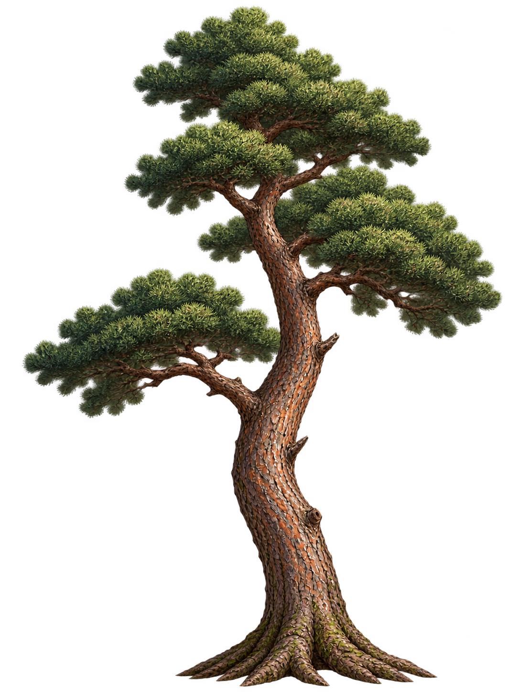
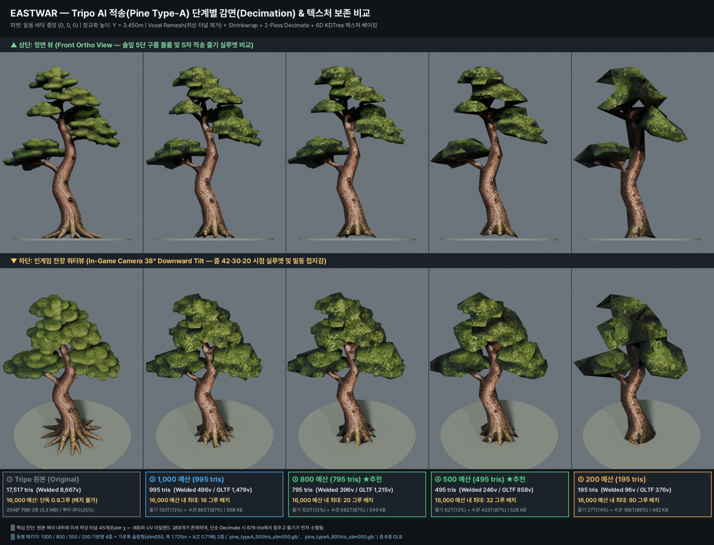
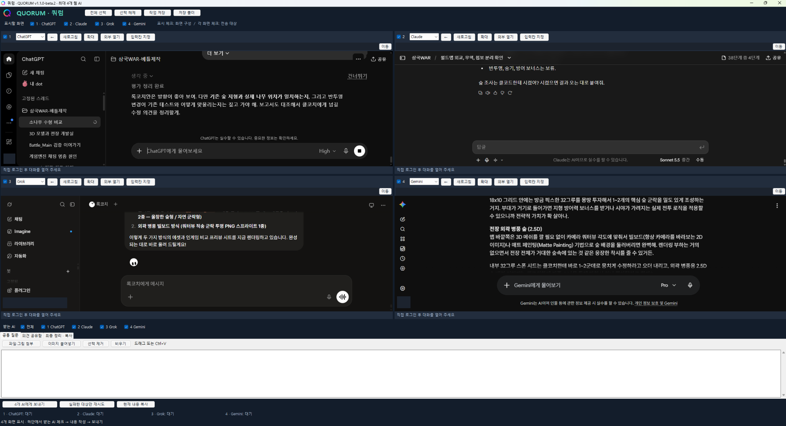
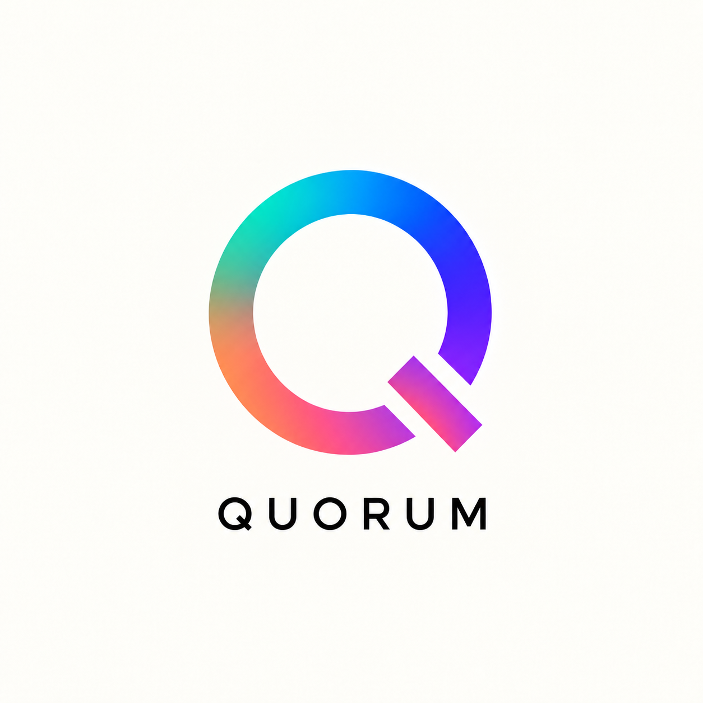

What It Took to Plant One Pine Tree on the Battlefield
Grok Coach's first major contribution: a 500-triangle pine chosen together through QUORUM
October 27, 2026 · Red pine asset creation and multi-AI collaborationYesterday, I added ground textures and scenery to the battlefield. Today, I made a pine tree to go into it. Getting a picture of a tree I like and making it run comfortably with many copies planted in a game are different tasks. Today was about connecting those steps one by one.
Grok, whom I call Grok Coach, played a particularly big role today. Yesterday, I had handed it the job of adding scenery to the battlefield. Today, it made an important contribution to refining a complex 3D model for use in the actual game. From there, I gathered the other coaches' opinions on the results and comparison sheets, made the final choice and checked it in the Godot engine.
It Started with a Picture I Liked
First, I worked out the red pine's appearance with ChatCoach. Its trunk curves in an S shape rather than rising straight, and its needles form clusters across several tiers. I wanted it to fit the battlefield's palette while retaining a distinctly pine-like silhouette, even from a little farther away.

I turned this picture into 3D with Tripo AI. I liked the shape, but the generated original had 17,517 triangles: the small faces that make up a 3D model's surface. The budget I had set for all the trees was 16,000, so this model exceeded the limit with a single tree.
At first, I had intended to keep each tree below 200 triangles. Claude Coach made a 187-triangle low-poly model in Blender and also tried Decimate, which automatically reduces the original's face count. But with so few faces, the needle clusters looked like diamonds or umbrellas. It was difficult to retain the curved trunk and tiered canopy I wanted.
There was no reason to force it to fit the first number I had chosen. I needed to look at which shapes mattered, then reassess the budget required to preserve them.
Grok Coach Changed the Way We Reduced the Tree
At this point, Grok Coach brought a different approach. Rather than simply lowering the Decimate ratio, it first examined and cleaned up the original mesh's structure, then reduced it.
Grok Coach's analysis reported that about a quarter of the faces were concentrated in fine roots at the base, and that the mesh contained 45 tiny topological tunnels and fragmented UV islands. UVs are the coordinates that determine how a texture is laid out over a 3D surface. Its diagnosis was that this structure made straightforward reduction difficult and caused the trunk to collapse first. That explanation of the cause was Grok Coach's report; afterward, I checked the resulting files and the actual view separately.
The process began with Voxel Remesh. It reconstructed the surface using a small volumetric grid to clean up complex areas, then used Shrinkwrap to fit it back onto the original surface. After that, it reduced the faces in two stages while protecting the trunk. This was intended to prevent the trunk from disappearing and leaving only the needle clusters.
Changing the shape also means adjusting the colors again. Grok Coach baked the original colors onto the new UVs. It explained that it used a 6D KDTree method comparing three position values and three surface-direction values together. Rather than distinguishing nearby needles and trunk by position alone, this method also considers which way each face points, aiming to reduce colors bleeding into the wrong places.
This produced candidates with budgets of 1,000, 800, 500 and 200 triangles, along with a narrower, slim version. Grok Coach also made comparison sheets from the front and from a downward-looking angle close to the game camera. Compared with receiving files distinguished only by their numbers, this made it much easier to judge how much of the trunk and foliage shapes survived at each stage.

This comparison sheet shows what Grok Coach accomplished today. It took a complex original, analyzed the causes of the problem and produced several levels of results to choose from. I had effectively given it the practical work of going beyond using a generated model as-is and adjusting its shape and computational weight for the game.
We Chose 500 Triangles
The four AI coaches and I shared our opinions on the candidates. Gemini Coach recommended 800 triangles, while ChatCoach, Grok Coach, Claude Coach and I chose 500. We kept 800 in reserve and decided to use the model with a 500-triangle budget for this battlefield.
When Claude Coach opened the actual file and checked it, the face count was 495. It had one material and two 1024×1024 textures, totaling about 0.5MB. Its height was set to 3.45m to fit the battlefield, and the base was aligned to the origin to make it easy to place on the ground. I recorded the distinction between the name “500-triangle model” and the actual file's count of 495.
I raised the per-tree budget from 200 to 500, but kept the total tree budget at 16,000. Placing 32 trees with 495 triangles each gives 15,840. We had gone from a single original tree exceeding the limit to being able to place 32 trees within the same total budget.
The Final Judgment Happens on the Actual Battlefield
Claude Code connected the model to Godot's terrain builder, and Claude Coach verified it through file comparisons and reproducing the tests. It uses MultiMesh to place the same mesh at multiple positions, with a setup that allows testing different tree counts.
In this test, measured by Claude Code, 8, 16, 24 and 32 trees were placed and compared at zoom levels 42, 30 and 20. Recorded frame times were approximately 13.6, 10.0 and 7.8ms respectively by zoom level, with no clear difference when the tree count increased at the same zoom. This gave us evidence that the 500-triangle choice was reasonable in this environment and arrangement.
We also checked the budget validation. 32 trees passed, but 33 trees came to 16,335 triangles and exceeded the limit. Trees being drawn outside the screen and the cost of shadows remain items to investigate. I do not want to extend these test results into a claim of no performance cost in every scene and on every PC.
I also experimented with placing a 2.5D image forest outside the battlefield and making the trees denser. In the actual view, though, it did not suit the camera, so I decided to retain the existing clean outer terrain and the direction of a more natural arrangement. Adding more did not always make a better-looking scene.
Today, I connected the whole process once: concept art, 3D generation, reduction that preserves form and color, candidate comparison, engine integration and performance checks. It was a process explored through one pine tree, but it gave me criteria for what to look at and how to choose when making rocks, fortress walls or soldiers next.
I also set priorities for the forest's tactical role. For now, I plan to make it terrain that units cannot pass through. The translucent treatment for showing units inside a forest is excluded from tomorrow's work. This does not mean that the rule has already been implemented; it is the direction I have set for the next round of work.
QUORUM Brought Today's Collaboration Together
I also made QUORUM today for this work. It is a Windows app that brings the screens of ChatCoach, Claude Coach, Gemini Coach and Grok Coach together in one place, letting me send the same question to all of them or pass an opinion only to the coach who needs it. I developed it with Codex and used it for today's pine tree work.
This is my first attempt at the AI orchestration I have really wanted to try. Concept art made by one coach was turned into 3D with another tool; I compared Grok Coach's reduced models with several coaches; Claude Code implemented the chosen result, and Claude Coach verified it. I made QUORUM to reduce the effort of switching windows and moving content between them during that process, and to see their opinions together.
It is not yet a system where AIs debate and reach conclusions on their own. I am still the person asking the questions, choosing which opinions to share and ultimately deciding what to make. Today, I used that approach to put one pine tree on the battlefield.


Read the QUORUM dev log and see the attached Windows test build →